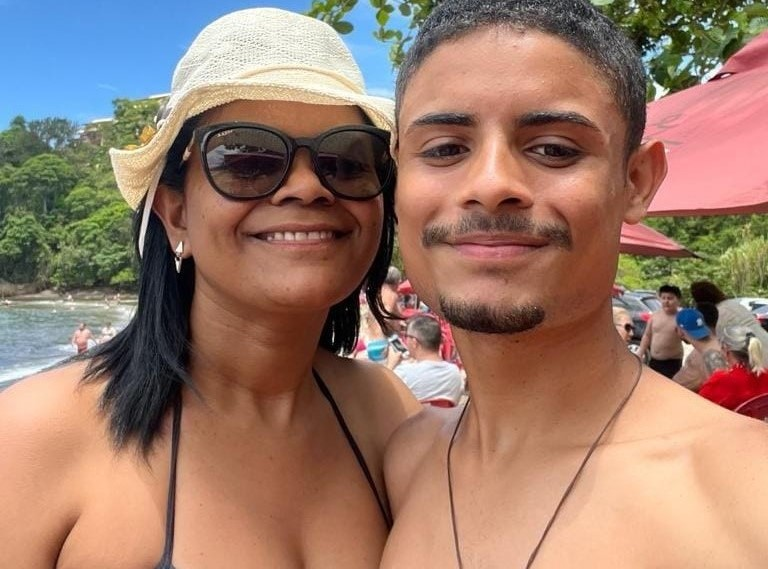
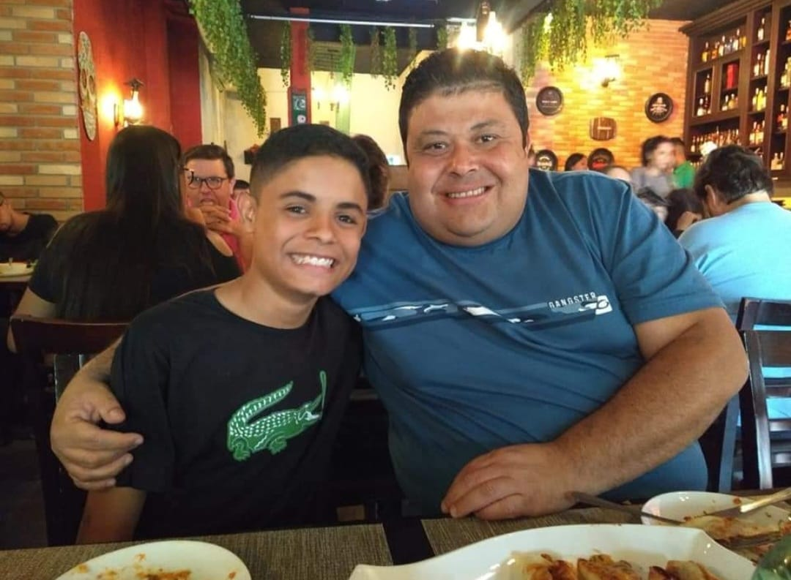
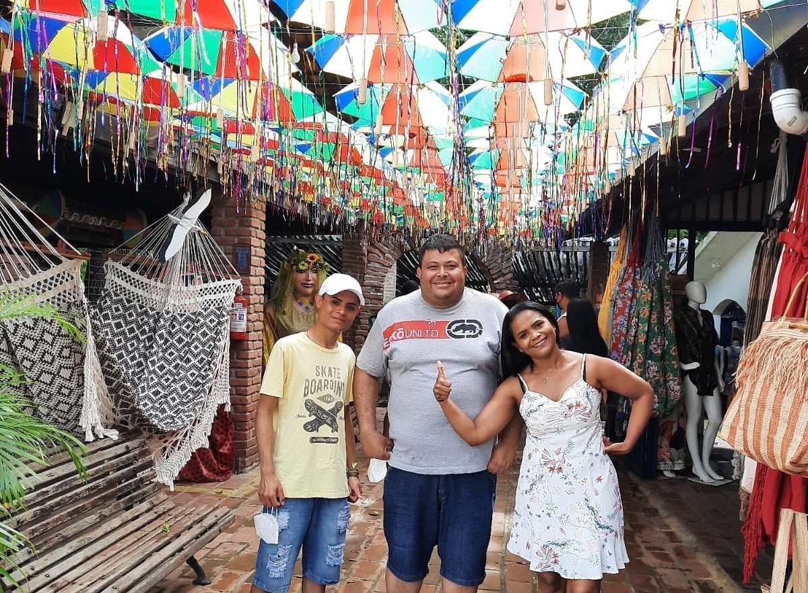
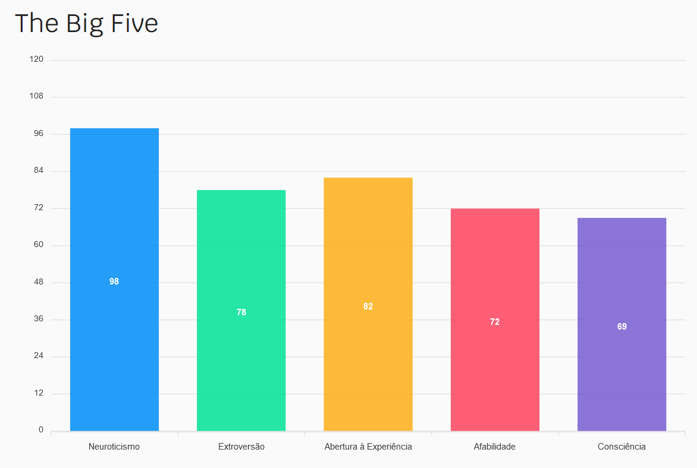

Eu sou Programador
- Nome: Bruno Portugal
- Escolaridade: Ensino Médio Completo
- Idade: 19 anos
- País: Brasil
- Cidade Natal: São Paulo - SP
Olá, sou estudante dedicado da Etec Zona Leste, imerso no curso de Desenvolvimento de Sistemas. Atualmente, estou embarcando em uma jornada apaixonante de aprendizado, explorando as nuances da programação e do design de sistemas. Minha busca pelo conhecimento me levou a compreender conceitos complexos e a desenvolver habilidades práticas que são essenciais para enfrentar os desafios do mundo da tecnologia.
Ao longo do curso, tenho me destacado em áreas como programação, resolução de problemas e trabalho em equipe. Acredito que a educação é a chave para o sucesso, e estou comprometido em extrair o máximo de aprendizado possível durante minha jornada na Etec. Além disso, busco constantemente oportunidades para aplicar meus conhecimentos em projetos práticos, consolidando assim minha compreensão e contribuindo para meu desenvolvimento profissional.


Meus Hobbies
Arte
Sou verdadeiramente apaixonado por arte, e acredito que cada obra é uma janela para um universo único de expressão e emoção. Dentro deste código, encontrei um espaço especial para compartilhar meu apreço, começando pela fascinante forma de pintura.
Programação
Uma paixão que transcende linhas de código e se transforma em uma experiência de criação e resolução de problemas. O título "Programação" não é apenas uma etiqueta, mas um portal para um universo onde a lógica e a criatividade dançam em harmonia.
Viagem
Gostar de viajar é uma paixão que transcende fronteiras e enriquece a vida de quem se entrega a essa experiência única. A sensação de explorar novos horizontes, descobrir culturas diferentes e vivenciar paisagens deslumbrantes é verdadeiramente incomparável.
Tarefas I
I I I Assuntos adquiridos este ano
-
I - Positivismo
"A sociedade só evolui com a ciência" - Auguste Comte 1798-1857O Positivismo, marcado pela famosa frase de Auguste Comte, "A sociedade só evolui com a ciência", é uma corrente filosófica que enfatiza a importância do método científico e da observação empírica na compreensão do mundo. Comte, um pensador do século XIX, propôs essa abordagem como um meio de superar as incertezas e os conflitos inerentes às fases anteriores do pensamento filosófico.
-
II - Ética de Platão
"A Tríade da Alma" - Platão 428 a.C. - 348 a.C.Um dos conceitos fundamentais na ética de Platão é a "Tríade da Alma", uma ideia apresentada em sua obra "A República". Segundo Platão, a alma humana é composta por três partes distintas: a razão, a vontade (ou espírito) e o apetite. Essas partes, representadas como diferentes elementos de nossa natureza psíquica, estão constantemente interagindo. A justiça, de acordo com Platão, é alcançada quando a razão, simbolizada pelo intelecto, exerce controle e harmonia sobre a vontade e o apetite. Essa visão da alma como uma tríade influencia profundamente sua concepção de virtude e governança, proporcionando uma base filosófica para compreender o equilíbrio interno necessário para uma vida ética.
-
III - Amor Fati
"Minha fórmula para a grandeza é o amor fati" - Friedrich Nietzsche 1844-1900"Minha fórmula para a grandeza é o amor fati" proclama a filosofia de Friedrich Nietzsche. O conceito de "amor fati", traduzido do latim como "amor ao destino", representa a aceitação total e afirmativa de todos os aspectos da própria vida, incluindo os momentos de alegria, sofrimento e adversidade. Para Nietzsche, a verdadeira grandiosidade reside na capacidade de abraçar não apenas as circunstâncias desejáveis, mas também as experiências mais desafiadoras, reconhecendo que cada evento contribui para a totalidade de quem somos. O amor fati é uma resposta ativa à existência, uma disposição a abraçar tudo que a vida oferece, transformando as dificuldades em oportunidades de crescimento. Em vez de lamentar o que não podemos controlar, Nietzsche nos convida a amar e afirmar tudo que compõe o nosso destino, forjando, assim, uma atitude corajosa e enriquecedora diante da complexidade da existência.
Tarefas I I
Sobre mim
-
Nome: Bruno Santos Portugal
Nascido em São Paulo - Hostital Campo Limpo 24 - 11 - 2004
Mãe: Patricia dos Santos
Nascida em São Luis - Maranhão 04 - 07 - 1981
Pai: Denis de Souza Cruz
Nascida em São Paulo - Guarulhos 20 - 04 - 1978
Filho Único
Privilégiado
Hobby
Ler livros, conhecer novos museus, ir em brechós de antiguidades, sair com meus amigos... entre outras muitas coisas
Escola do Fundamental II - Ataulpho Alves
Escola: Estadual Ataulpho Alves - Ensino Fundamental II (publica); Endereço: Rua Maria Susano Polilo, 485 - Vila Rosaria, São Paulo - SP.
Bairro
Bairro: Vila Rosariam, São Miguel Paulista - SP.
Cursos que Pretendo Fazer
Curso I: Aanálise e Desenvolvimento de Sistemas (FATEC);
Curso II: Ciência da Computação (USP);
Curso III: Arquitetura e Urbanismo (MacKenzie);
Um Defeito e Uma Virtude
Defeito: Me comparar com as outras pessoas;
Virtude: Ser dedicado;
Definição
Creio que as pessoas ao meu redor me definem como uma pessoa alegre e extrovertida
Eu em uma palavra
Eu me definiria como uma pessoa "companheira"
Minha familia
-

-

-

Resultado Teste Big Five
-

-
Tarefas I I I
Notas
-
Que nota você daria para sua tarefa do 4º Bimestre?
Atribuiria à minha tarefa do 4º Bimestre a nota B. Reconheço que poderia ter dedicado mais esforço na sua execução, contudo, acredito que realizei um trabalho satisfatório. Este processo me proporcionou valiosas aprendizagens, e vejo o espaço para aprimoramento como uma oportunidade construtiva para futuras tarefas. Comprometo-me a aplicar uma abordagem mais diligente em projetos futuros, buscando constantemente elevar o padrão da minha produção acadêmica.
Que nota daria para você como aluno na minha ou minhas disciplinas durante todo o ano letivo?
Acredito que mereceria a nota MB, visto que o conteúdo aplicado é de excelente qualidade, proporcionando uma experiência educacional enriquecedora. A abordagem consistente e aprofundada contribuem significativamente para meu aprendizado e compreensão abrangente dos temas abordados.
Que nota daria para você como aluno incluindo as demais matérias?
Daria a mim mesmo a nota MB ao refletir sobre meu desempenho nas disciplinas ao longo do ano letivo. Sinto que me dediquei significativamente para realizar as tarefas propostas, buscando sempre a excelência. Ao avaliar meu trabalho, percebo que alcancei um padrão de qualidade que reflete meu comprometimento com os estudos. Reconheço, no entanto, que há sempre espaço para aprimoramento, e estou determinado a continuar investindo esforços para alcançar níveis ainda mais elevados de excelência acadêmica. Agradeço as oportunidades de aprendizado proporcionadas e vejo este processo de autoavaliação como um guia valioso para meu contínuo desenvolvimento como estudante.